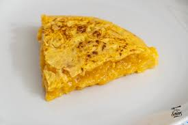

Tortilla de Patatas
Ingredientes
- 4-5 patatas medianas
- 1 cebolla (opcional)
- 5 huevos
- Aceite de oliva
- Sal

Pasos para la elaboración
- Pelar y cortar las patatas en rodajas finas.
- Freírlas en aceite con la cebolla picada.
- Escurrir y mezclar con los huevos batidos.
- Cuajar la mezcla en una sartén a fuego medio.
- Dar la vuelta y cuajar por el otro lado.
- Servir templada o fría.
Descargar receta en PDF